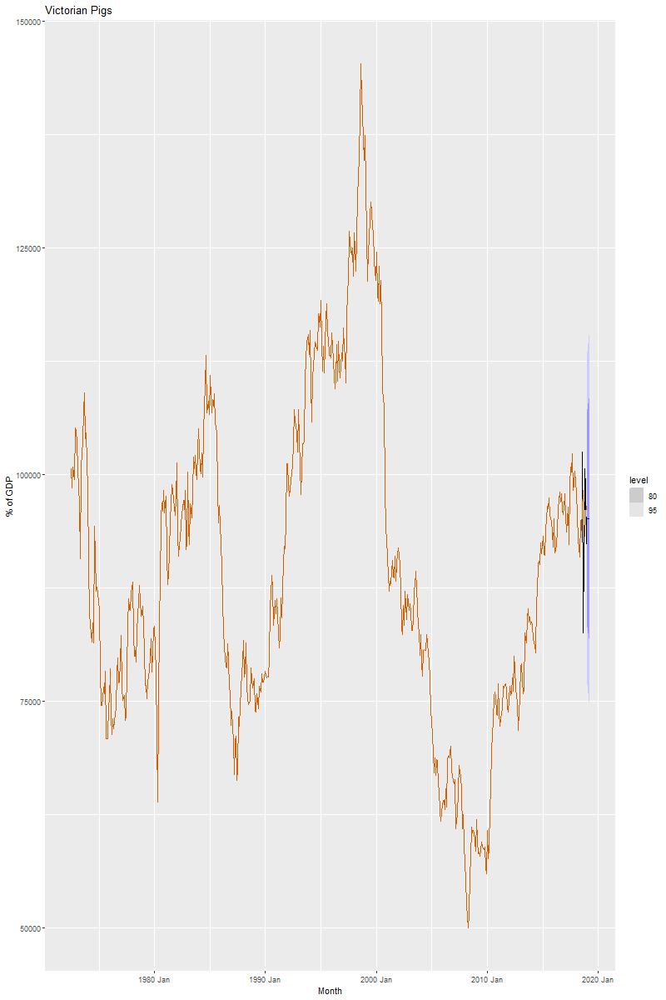

Consider the the number of pigs slaughtered in Victoria, available in the aus_livestock dataset.
Unnamed: 0
Animal
State
Count
Month
1976-07-01
1
Bulls, bullocks and steers
Australian Capital Territory
2300.0
1976-08-01
2
Bulls, bullocks and steers
Australian Capital Territory
2100.0
1976-09-01
3
Bulls, bullocks and steers
Australian Capital Territory
2100.0
1976-10-01
4
Bulls, bullocks and steers
Australian Capital Territory
1900.0
1976-11-01
5
Bulls, bullocks and steers
Australian Capital Territory
2100.0
...
...
...
...
...
2018-08-01
29360
Sheep
Western Australia
160600.0
2018-09-01
29361
Sheep
Western Australia
121900.0
2018-10-01
29362
Sheep
Western Australia
134000.0
2018-11-01
29363
Sheep
Western Australia
153700.0
2018-12-01
29364
Sheep
Western Australia
127300.0
29364 rows × 4 columns
Part A
Use the ETS() function to estimate the equivalent model for simple exponential smoothing. Find the optimal values of α and ℓ_0, and generate forecasts for the next four months.
from statsmodels.tsa.holtwinters import ExponentialSmoothingmodel = ExponentialSmoothing(victorian_pigs, trend ='additive', seasonal =None).fit()predictions = model.forecast(steps=4) # predict the next 4 time steps
Compute a 95% prediction interval for the first forecast using \hat{y}±1.96s where s is the standard deviation of the residuals. Compare your interval with the interval produced by R
# we need to calc only the first forecast residuals_std = model.resid.std()first_forecast = predictions.iloc[0]margin_of_error =1.96* residuals_stdlower_limit = first_forecast - margin_of_errorupper_limit = first_forecast + margin_of_errorprint(f'95% Prediction Interval: ({lower_limit:.2f}, {upper_limit:.2f})')
95% Prediction Interval: (77022.62, 114041.83)
Rcode :
```{r}
fc |>
autoplot(tail(vic_pigs, 5)) +
geom_line(aes(y = .fitted), col="#D55E00",
data = augment(fit)) +
labs(y="% of GDP", title="Victorian Pigs") +
guides(colour = "none")
` ` `

image.png
My 95% confidence intervals is narrower compared to the confidence interval produced from the Rcode. We suspect that this may due to different smoothing and leveling estimates.
Exercise 8.5
Data set global_economy contains the annual Exports from many countries. Select one country to analyse.
Part A
Plot the Exports series and discuss the main features of the data
Use an ETS(A,N,N) model to forecast the series, and plot the forecasts
Part C
Compute the RMSE values for the training data.
Part D
Compare the results to those from an ETS(A,A,N) model. (Remember that the trended model is using one more parameter than the simpler model.) Discuss the merits of the two forecasting methods for this data set.
Part E
Compare the forecasts from both methods. Which do you think is best?
Part F
Calculate a 95% prediction interval for the first forecast for each model, using the RMSE values and assuming normal errors. Compare your intervals with those produced using R.
Exercise 8.6
Forecast the Chinese GDP from the global_economy data set using an ETS model. Experiment with the various options in the ETS() function to see how much the forecasts change with damped trend, or with a Box-Cox transformation. Try to develop an intuition of what each is doing to the forecasts.
[Hint: use a relatively large value of h when forecasting, so you can clearly see the differences between the various options when plotting the forecasts.]
Exercise 8.7
Find an ETS model for the Gas data from aus_production and forecast the next few years. Why is multiplicative seasonality necessary here? Experiment with making the trend damped. Does it improve the forecasts?
Exercise 8.8
Recall your retail time series data (from Exercise 7 in Section 2.10).
Part A
Why is multiplicative seasonality necessary for this series?
Part B
Apply Holt-Winters’ multiplicative method to the data. Experiment with making the trend damped.
Part C
Compare the RMSE of the one-step forecasts from the two methods. Which do you prefer?
Part D
Check that the residuals from the best method look like white noise.
Part E
Now find the test set RMSE, while training the model to the end of 2010. Can you beat the seasonal naïve approach from Exercise 7 in Section 5.11?
Exercise 8.9
For the same retail data, try an STL decomposition applied to the Box-Cox transformed series, followed by ETS on the seasonally adjusted data. How does that compare with your best previous forecasts on the test set?